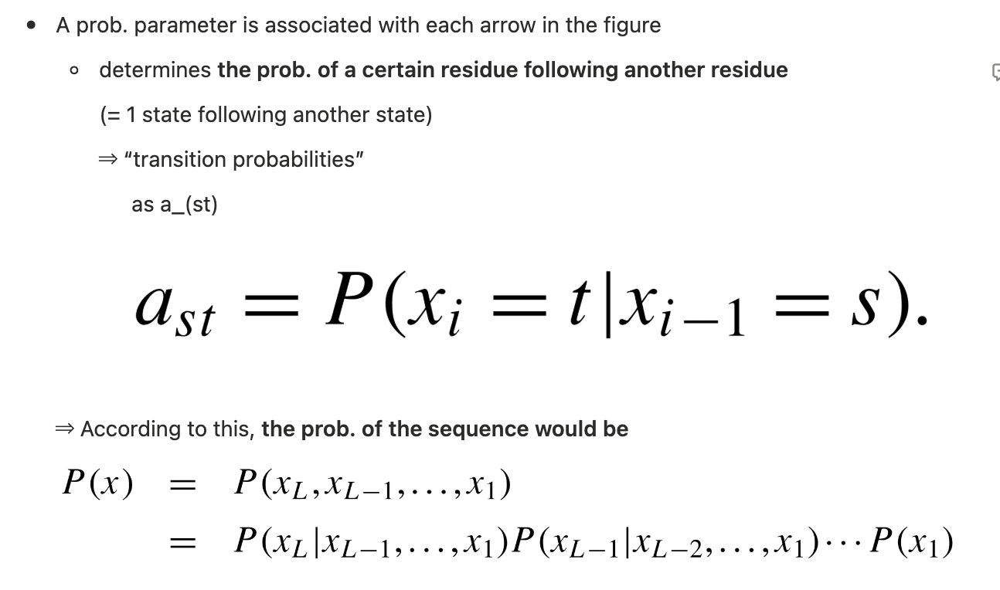
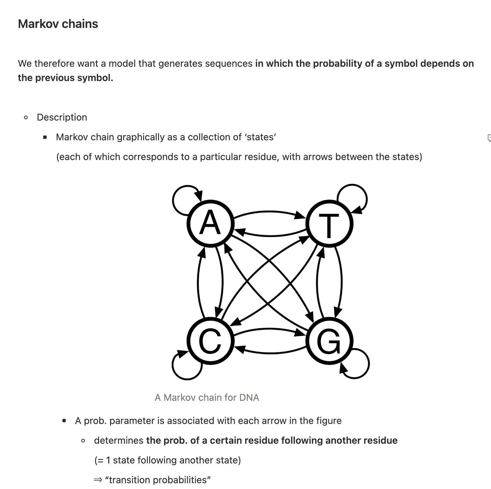
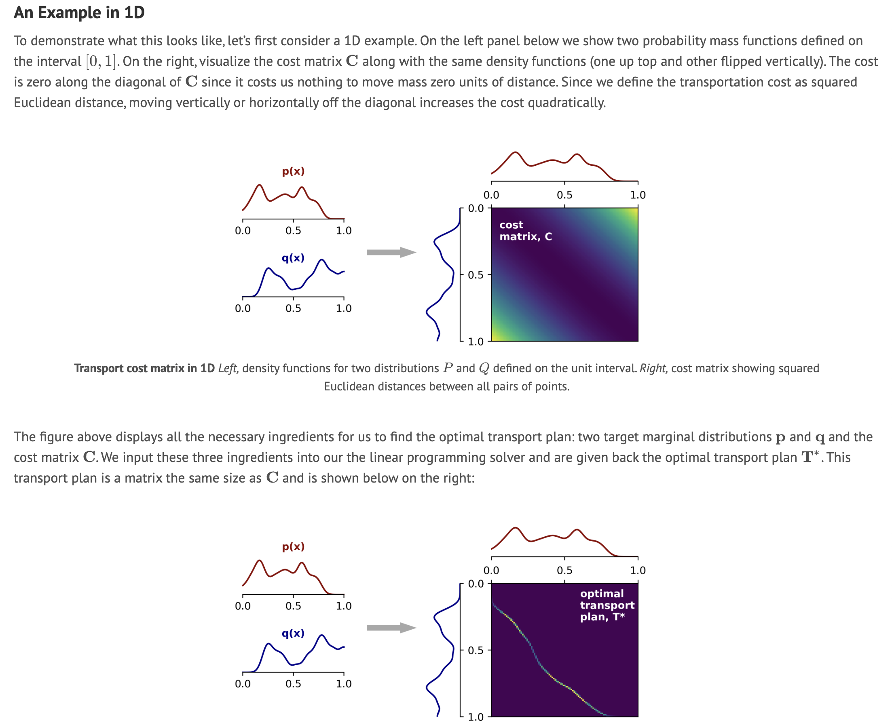
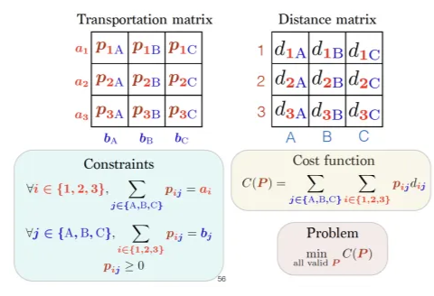
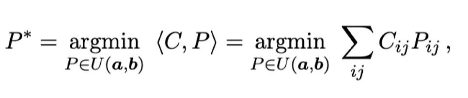

Dynamics modeling
Trajectory Inference를 위해..Palantir는 OT 기반, Moscot, CellRank는 MC 기반임.
아틀라스 Lineage tracing에 있어 어떤 알고리즘이 적합할지 파볼 필요가 있음.
또 Telencephalon 발달 과정도 좀 더 깊게 이해해야함.
Markov Chain vs Optimal Transport
1. Markov Chain
- Recap ) 다음 세포를 Stochastic 하게 확률적으로 모델링 하는 것.
- 그래서 Palantir의 diffusion 계산 방식은 이것과 같음
- Transition Probability를 임베딩 상 kNN 거리로 측정해서, 특정 manifold 안에서의 확산 경로를 만드는 것


- Random walk
2. Optimal Transport (OT)

- OT에서의 방식 크게 Monge, Kantorovich로 나뉜다.
- Monge → 1:1 matching → 세포가 분열하는 즉 1: n의 설명이 안됨
- Kantorovich → Mass Splitting으로 이걸 해결해서, 결국 최근 OT 문제들은 Kantorovich로 푼다.
WOT (Waddington-OT)Epigenetic Landscape에 적용된 Kantrovich 방식
Stem cell → Terminal state를 시간적으로 모델링 한것. (완전 간략하게)
- Time coupled임.
- t로 state를 나눠서, 인접한 시간대 사이에서 Cost를 최소화 시킴. transport force가 Cost가 되겠지?
- Kantorovich OT
- Joint dist. 에 대해 transport plan을 찾는다. 이게 coupling

- 이 때 distance mat.은 고정되어 있기 때문에, Transportation mat.을 최적화하면 된다.
Moscot의 경우
- JAX checking!
- moscot은 cell-states transition을 push-forward/pull-back operation을 통해서 계산
- Moscot에 사용된 OT가 Kantorovich

- Moscot에 사용된 OT가 Kantorovich
- 일반적인 OT와는 다른 점은 differentiate, proliferate, apoptosis에 대해서 적용해 주고 싶기에 왼쪽의 marginal a에 대해서 아래와 같이 proliferation at rate β(x)와 death at rate δ(x)를 적용
- coupling matrix가 좀 더 differentiation에 대해서 더 높은 probability mass 줄 수 있다
- 그래서 Output이 Coupling matrix
CellRank2 의 경우
- Waddington-OT (WOT) 2
- v1과 달리 v2에서 처음 커널을 도입해서 기존에는 Velocity에 크게 의존했지만, 여러 데이터를 사용할 수 있다.
| 구분 | CellRank 2 자체 OTKernel | Moscot (RealTimeKernel.from_moscot) |
| 기반 엔진 | Waddington-OT (WOT) | Moscot (Entropic OT + Unbalanced) |
| Kantorovich 해결 방식 | 비교적 단순한 Sinkhorn 알고리즘 | 고도로 최적화된 Low-rank Sinkhorn |
| 확장성 | scRNA-seq 데이터 위주 | Spatial(공간), Multi-modal 등 확장 가능 |
| Unbalanced 처리 | 기본적인 성장률(Growth rate) 반영 | Marginal constraint를 훨씬 정교하게 조절 가능 |
| 결론 | 가볍게 쓸 때 적합 | 본격적인 Time-series 분석의 표준 |
- 그래서 CellRank2 에서도 OTKernel을 사용할 수도 있는데, 최종적으로 추천되는 건 Moscot으로 Coupling mat. 계산 후 CellRank2로 Prob. conversion하는 것
- 이에 대한 구체적인 스텝
- Conversion
- Row normalization을 하면, cell_i → cell_j로 가는 확률이 된다.
- Combination
- Cytotrace는 별도 커널로 같은 시점 (t) 내부에서, Moscot (OT) 연결이 약한 구간에서 미세한 방향을 잡아주는 역할을 함.
- Where K_RT = Row-normalized Moscot Coupling mat.
⇒ Fate probability 행렬이 생기고
- Cytotrace는 별도 커널로 같은 시점 (t) 내부에서, Moscot (OT) 연결이 약한 구간에서 미세한 방향을 잡아주는 역할을 함.
- Coarse-graining
- Macro-state로 묶어준다.
Strategy
- CellRank
- Time-series Kernel : Moscot
- Pseudotime Kernel :
- CytoTRACE
- Palantir
- Gemini의 추천은 Cytotrace/Palantir - 실제 Timepoint의 상관계수가 더 높은 걸 쓰는것
- Similarity (ConnectivityKernel): adata.obsp['connectivities']
→ Local Transition만 가능하도록 함. 하지만 어떤 임베딩의 connectivity를 사용할지?
→ Moscot을 사용한다면, 필수는 아닐 수 있다.